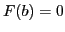
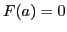
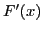
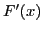

The Extended Mean Value Theorem
Following the method of the last section,
let  be defined by the equation
be defined by the equation
Let  be a function formed by replacing
be a function formed by replacing  by
by  in the
left-hand member of (13.1); that is,
in the
left-hand member of (13.1); that is,
From (13.7), ; and from (13.8),
; therefore, by Rolle's Theorem, at least one value of
between  and , say
and , say  will cause
 to vanish. Hence, since
will cause
 to vanish. Hence, since
we get
Since
 and
and  , it is evident that
also satisfies the conditions of Rolle's Theorem, so that
its derivative, namely
, it is evident that
also satisfies the conditions of Rolle's Theorem, so that
its derivative, namely  , must vanish for at least one
value of between and , say
, must vanish for at least one
value of between and , say  , and therefore
also lies between and . But
;
therefore
,
and
, and therefore
also lies between and . But
;
therefore
,
and
 .
Substituting this result in (13.7), we get
.
Substituting this result in (13.7), we get
In the same manner, if we define by means of the equation
we can derive the equation
where lies between and .
By continuing this process we get the general result,
where lies between and .
This equation is called the Extended Theorem of Mean Value13.2, or Taylor's formula.
david joyner
2008-08-11